Change background color
Add a background image by dragging it onto the browser window.
Browse for image files
Hide background image
Click on an image to use it:
Click on target to select it for editing. Reorder target display by reordering the list - targets at the top display over targets lower in the list.
To rearrange target order, click on a target listing (above) then use the Shift + ↑ / Shift + ↓ keys (together) to move it up/down the list.
Teleprompter text
Stage directions
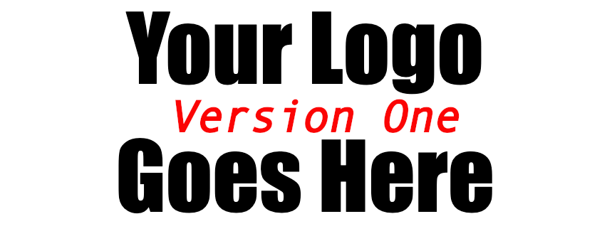
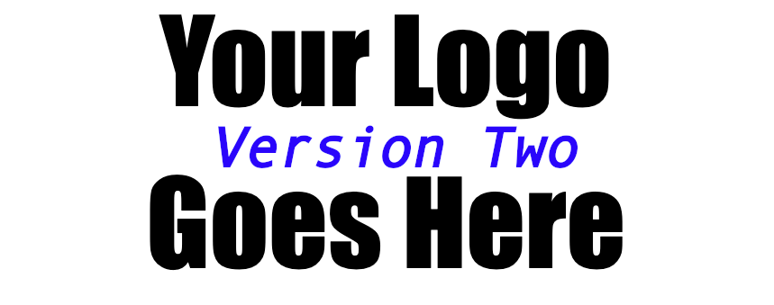
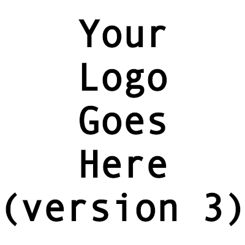
Editing: no target selected
Current dimensions: Canvas dims
Use short paragraphs of text for each teleprompt instance.
~ Start stage directions with a tilde character.
The following instructions offer basic details about how to use the SC Screen capture tool. The concept behind the tool is simple:
These instructions include the following sections:
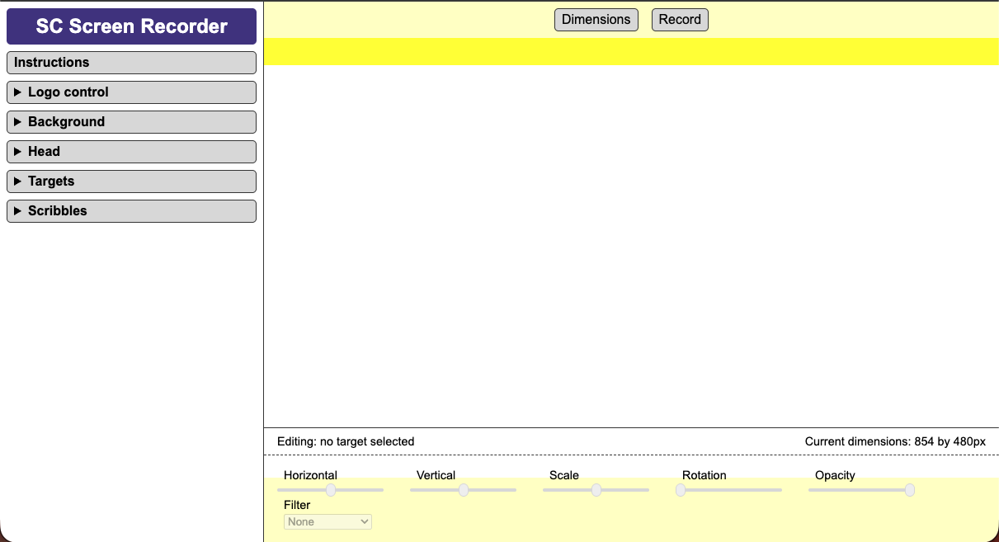
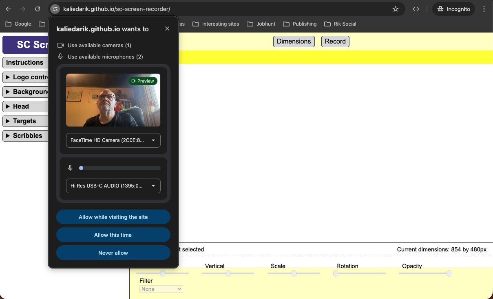
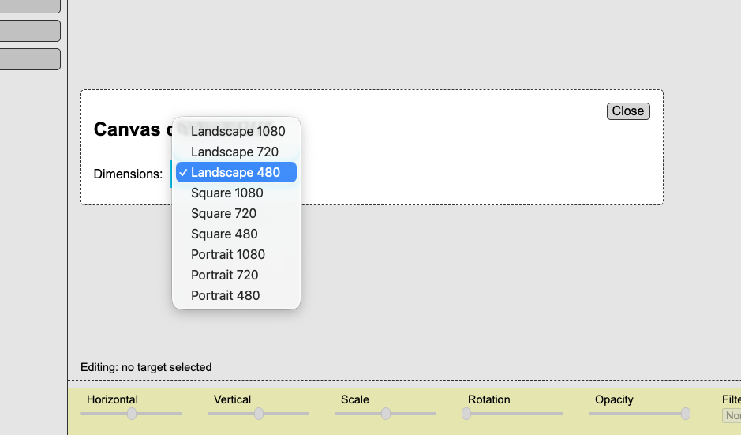
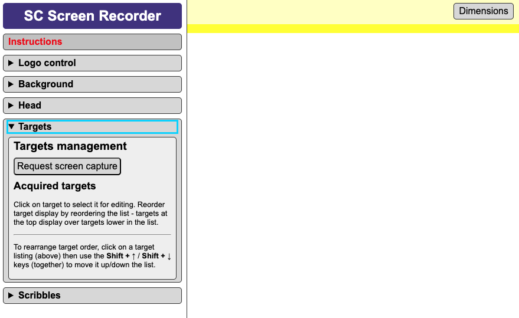
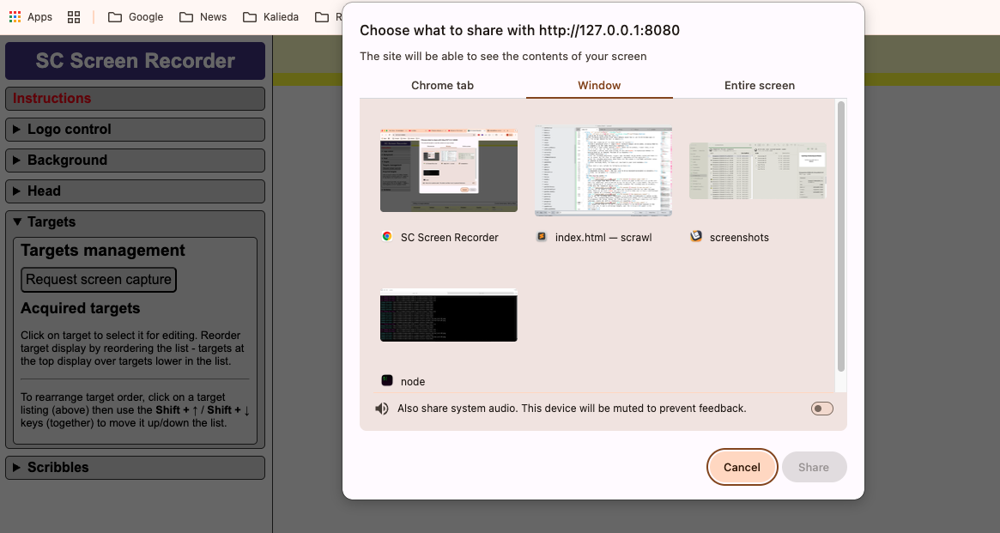
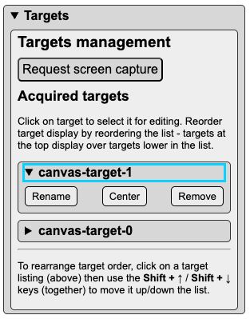
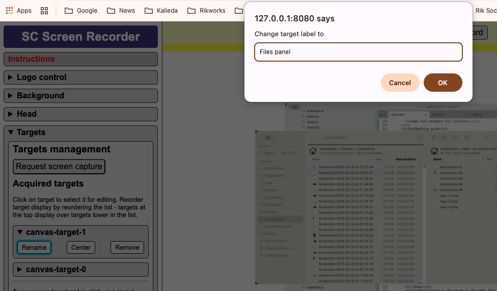
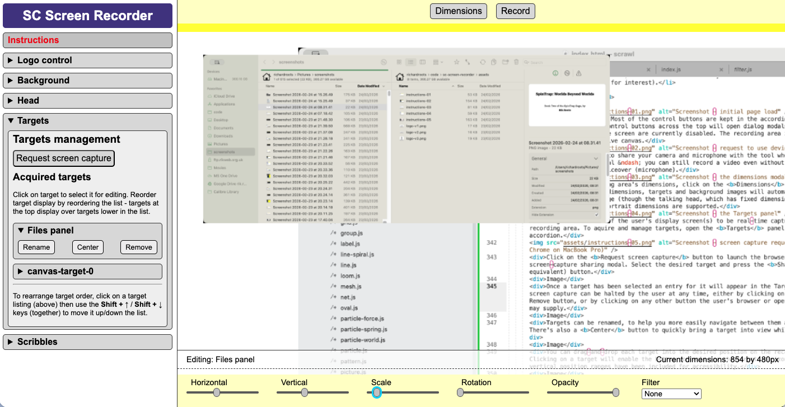
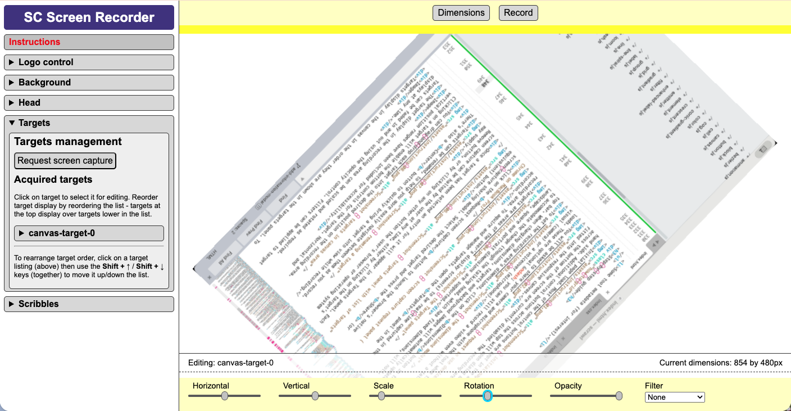
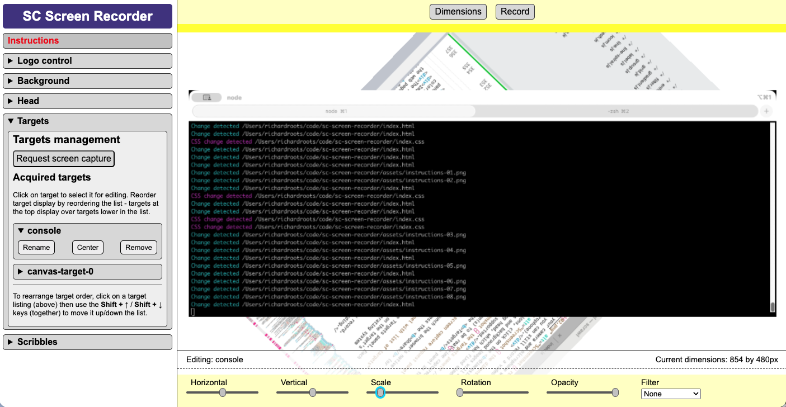
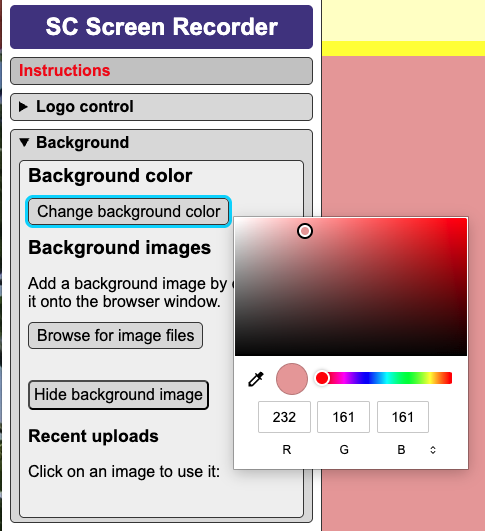
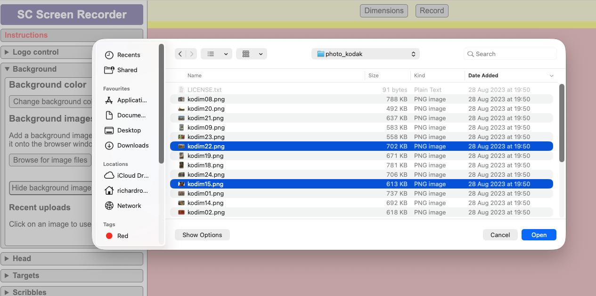
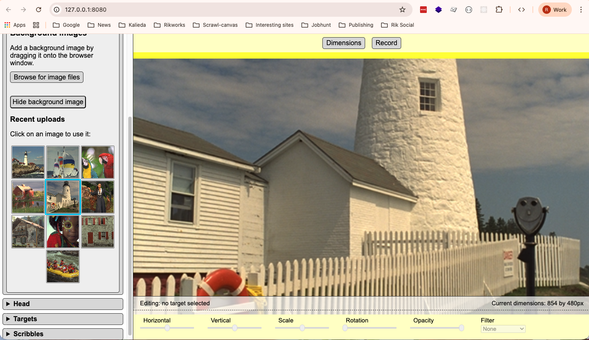
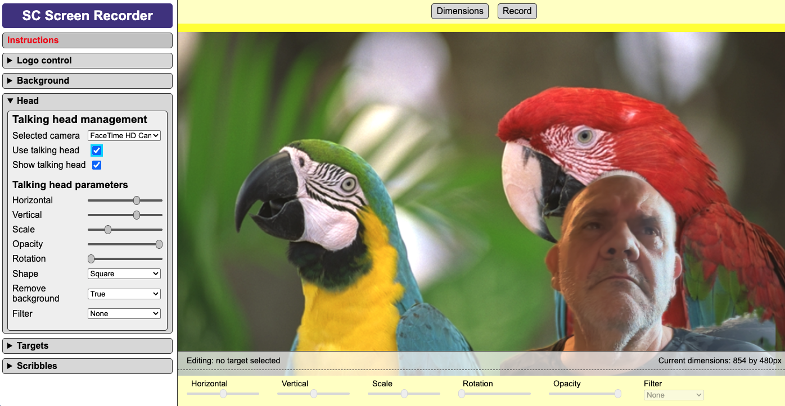
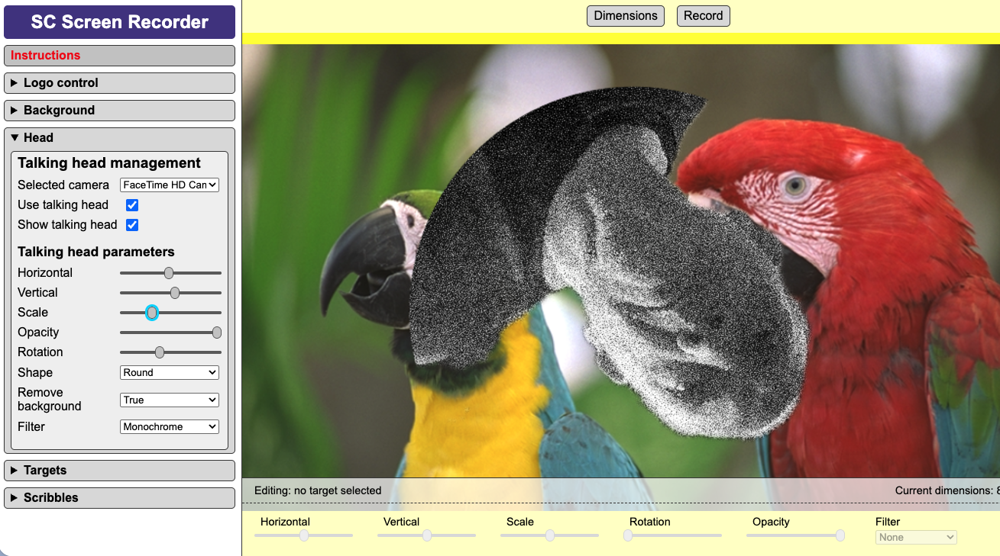
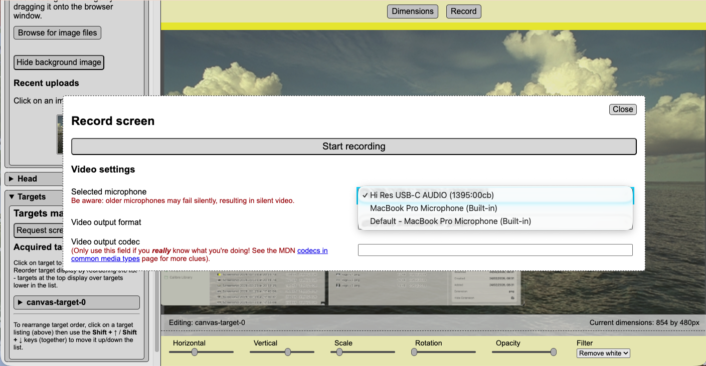
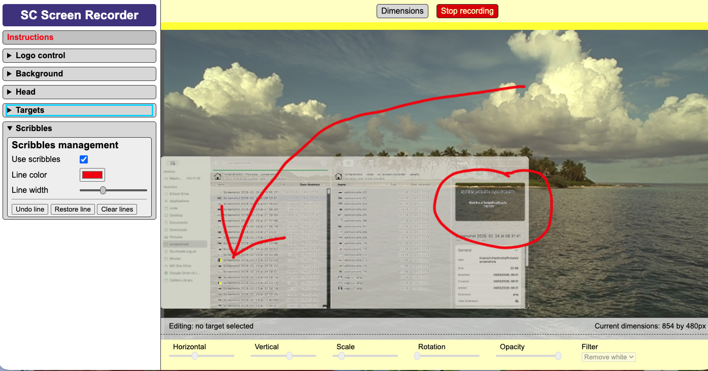
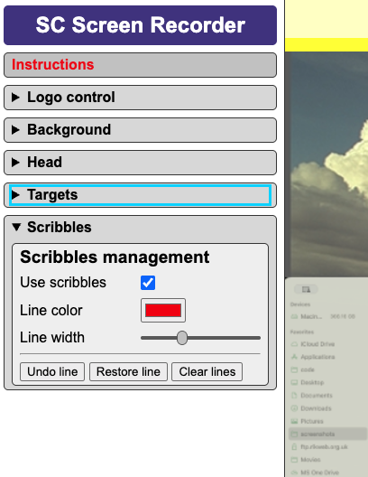
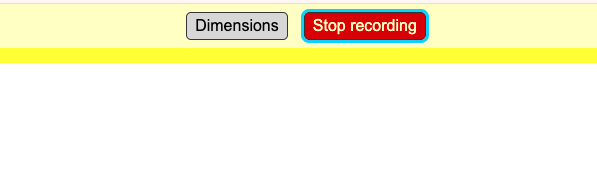
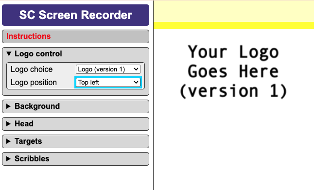
The web page supports the following (hopefully cross-browser standard) keyboard controls and shortcuts.
Keyboard Navigation:
Additional input controls:
Targets ordering:
In the Targets panel, focus on the target listing you want to move, then `SHIFT + UP-ARROW` to move up; `SHIFT + DOWN-ARROW` to move down.
Note that targets will display over those below them in the listing list; under those above them in the list.
Scribble line undo/restore:
This screen recording tool is a Proof of Concept, released under the MIT licence. More details about the tool, alongside its code, can be found in its repository on GitHub.
This tool has been designed to be hackable. Feel free to use the tool as-is on its github.io page, or fork the repository to coustomise and host your own version. The tool can also be downloaded and run locally – it has no backend or toolchain.
MIT Licence
Copyright (c) 2026 Rik Roots
Permission is hereby granted, free of charge, to any person obtaining a copy of this software and associated documentation files (the "Software"), to deal in the Software without restriction, including without limitation the rights to use, copy, modify, merge, publish, distribute, sublicense, and/or sell copies of the Software, and to permit persons to whom the Software is furnished to do so, subject to the following conditions:
THE SOFTWARE IS PROVIDED "AS IS", WITHOUT WARRANTY OF ANY KIND, EXPRESS OR IMPLIED, INCLUDING BUT NOT LIMITED TO THE WARRANTIES OF MERCHANTABILITY, FITNESS FOR A PARTICULAR PURPOSE AND NONINFRINGEMENT. IN NO EVENT SHALL THE AUTHORS OR COPYRIGHT HOLDERS BE LIABLE FOR ANY CLAIM, DAMAGES OR OTHER LIABILITY, WHETHER IN AN ACTION OF CONTRACT, TORT OR OTHERWISE, ARISING FROM, OUT OF OR IN CONNECTION WITH THE SOFTWARE OR THE USE OR OTHER DEALINGS IN THE SOFTWARE.